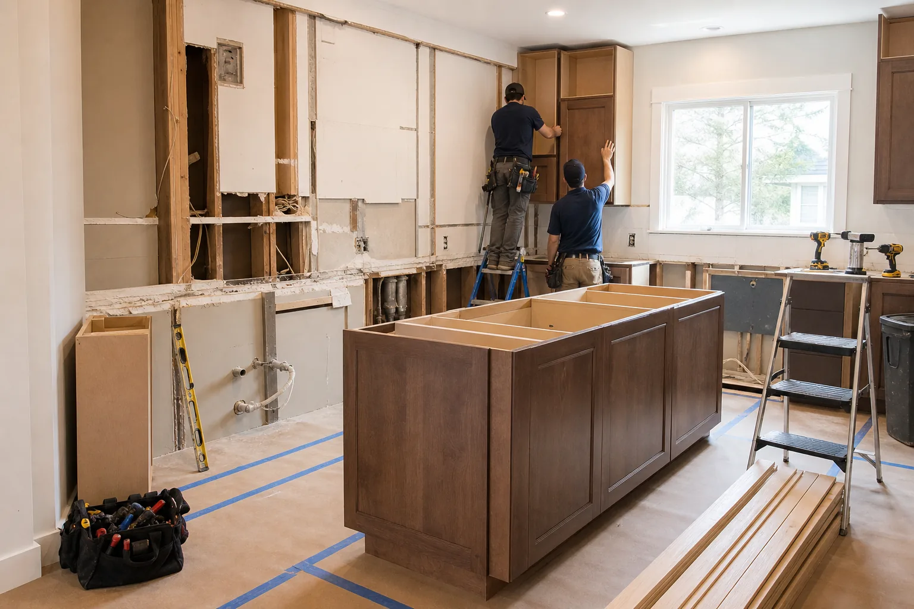
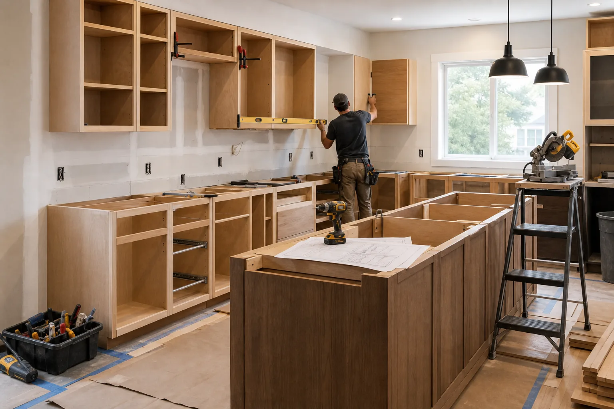
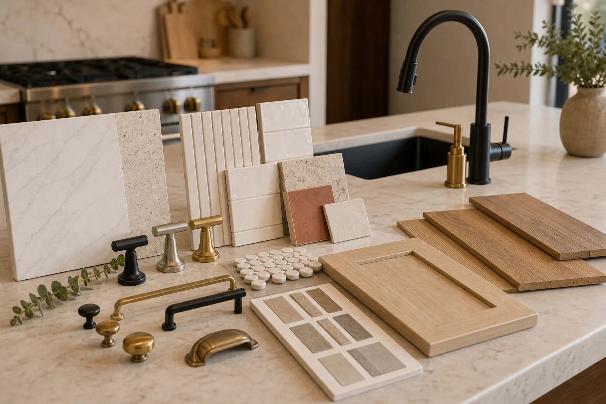
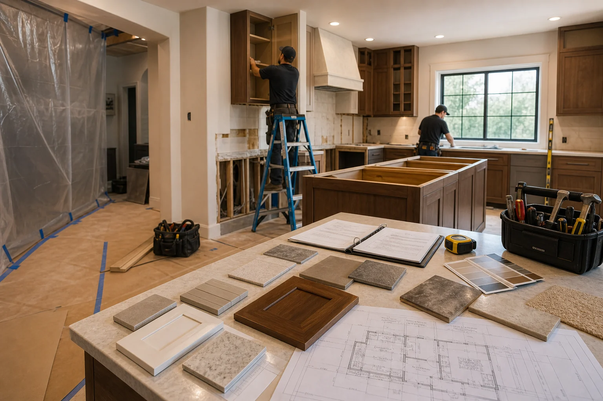

Connections for Complete Kitchen Remodel Projects
A full remodel can involve demolition, cabinets, surfaces, flooring, lighting, plumbing fixtures, trim, paint, and schedule coordination. We help route your request toward independent providers who can discuss the scope.
What May Be Included
Every kitchen is different, but full remodel inquiries often require a broader provider conversation than a single trade call.
- Existing kitchen review, project priorities, budget range, and timeline intake.
- Cabinet removal or replacement, layout adjustments, and storage planning.
- Countertop, backsplash, flooring, fixture, and lighting coordination.
- Questions about permits, inspections, licensed trades, debris handling, and work sequencing.
Project Scoping
Describe what is staying, what is changing, appliance plans, preferred materials, and whether walls, plumbing, or electrical locations may move.
Scheduling Reality
Full remodels often involve lead times for cabinets, countertops, inspections, and specialty trades. Ask providers how they sequence the work.
Verify Before Hiring
Confirm license, insurance, references, contract terms, payment schedule, warranty language, and responsibility for permits before work begins.
Share Your Remodel Goals
Use our form to explain your kitchen size, current condition, must-have changes, and preferred timeline. We will use those details to help route the inquiry.
- Add photos of the current kitchen.
- Include rough measurements or room size.
- Share timing, budget range, and priorities.


Build a Clear Remodel Brief Before You Hire
A complete kitchen remodel usually touches several decisions at once. Before speaking with a provider, gather the pieces that explain the current kitchen, the desired result, and the limits of the project.
Prepare Before Contact
- Photos of every wall and cabinet run
- Approximate room dimensions and ceiling height
- Appliance changes or relocation goals
- Must-have storage and workflow improvements
Ask the Provider
- Who coordinates demolition, trades, and inspections
- How allowances and change orders are handled
- What work requires licensed specialists
- What timeline depends on materials arriving

Best for homeowners who expect several trades, several material decisions, and a room that may be unavailable for part of the project.
A Full Kitchen Request Should Read Like a Project Roadmap
Complete remodels usually move through discovery, demolition, rough-in work, cabinet installation, surface installation, fixtures, punch-list review, and final cleanup. A stronger request helps local providers understand what kind of conversation is needed before anyone visits the home.
Scope shape
Cabinet replacement, counters, flooring, lighting, fixtures, paint, trim, and possible layout changes.
Early questions
What stays, what moves, what must be upgraded, and which items are already selected.
Timing drivers
Cabinet lead times, countertop templating, inspections, trade availability, and change-order decisions.
Provider fit
Ask who coordinates the schedule, protects the home, handles debris, and documents warranty terms.
Before You Speak With a Provider
- Take photos from each corner of the room before submitting the request.
- List appliance changes and whether plumbing or electrical locations may move.
- Ask whether permits, inspections, and licensed trade work are required locally.